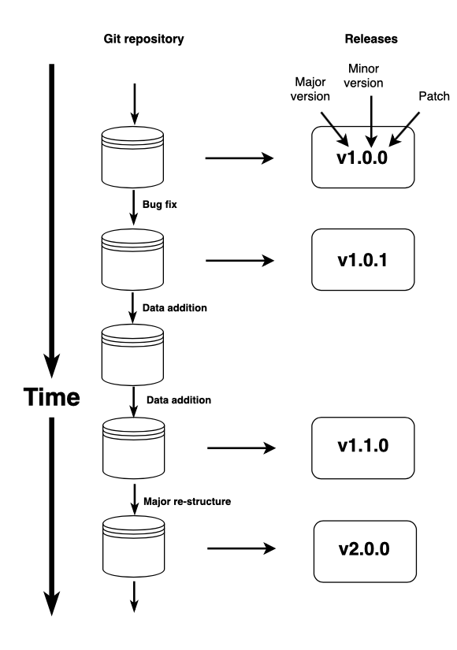

This vignette explains the protocol for adding a new study to AusTraits. Before starting this, you should read more about
It is important that all steps are followed so that our automated workflow proceeds without problems.
austraits.build repository from githubdataset_id in author_year format, e.g. Gallagher_2014.data with the name dataset_id, e.g. Gallagher_2014.data.csv and place it within the new folder (details here).metadata.yml and place it within the new folder (details here).build_setup_pipeline().This step updates the file remake.yml with appropriate rules for the new dataset; similarly if you remove datasets, do the same. (At this stage, remake offers no looping constructs, so for now we generate the remake file using: whisker.)
You can then rebuild AusTraits, including your dataset.
data.csv and metadata.yml files as necessary (details here).data.csv or metadata.yml files.It may help to download one of the existing datasets to use as a template for your own files and a guide on required content. You should look at the files in the config folder, particularly the definitions file for the list of traits we cover and the supported trait values for each trait. The GitHub repository also hosts a compiled trait definitions table.
The remainder of this vignette provides incredibly detailed instructions for steps 4-8 above. It is intended for anyone wishing to add datasets to either AusTraits itself or to use the austraits.build workflow to create a separate database.
The austraits.build repository includes a selection of functions that help build the repository. To use these, you’ll need to make them available.
The easiest way to load the functions into your workspace is to run the following (from within the repository)
source("scripts/custom.R") # source functions written for use within custom_R_code
library(austraits.build) # open the austraits.build package that provides the pipeline to build AusTraitsAdd a new folder within the data folder. Its name should be the study’s dataset_id, the core organising unit behind AusTraits.
The preferred format for dataset_id is the surname of the first author of any corresponding publication, followed by the year, as surname_year. E.g. Falster_2005. Wherever there are multiple studies with the same id, we add a suffix _2, _3 etc. E.g.Falster_2005, Falster_2005_2.
data.csv file
All data for a study (dataset_id) must be merged into a single spreadsheet: data.csv. All accompanying metadata is read in through the metadata.yml file. Some information must be input explicitly through the data.csv or metdata.yml file, while other information can be entered via either file; this is explicitly indicated for each element.
data.csv file must include taxon name, location_name (if there are multiple locations), contexts (if appropriate), and collection_date (if appropriate). The data.csv file can either be in a wide format (1 column for each trait, with trait name as the column header) or long format (a single column for all trait values and additional columns for trait name and units)For all field studies, ensure there is a column for location_name. If all measurements were made at a single location, a location_name column can easily be mutated using custom_R_code within the metadata.yml file. See sections adding locations and adding contexts below for more information on compiling location and context data.
If available, be sure to include a column with collection date. If possible, provide in yyyy-mm-dd (e.g. 2020-03-05) format or, if the day of the month isn’t known, as yyyy-mm (e.g. 2020-03). However, any format is allowed and the column can be parsed to the proper yyyy-mm-dd format using custom_R_code. If the same collection date applies to the entire study it can be added directly into the metadata.yml file.
If applicable, ensure there are columns for an context properties, including experimental treatments, specific differences in method, a stratified sampling scheme within a plot, or sampling season. Additional context columns could be added through custom_R_code or keyed in where traits are added, but it is best to include a column in the data.csv file whenever possible. The protocol for adding context properties to the metadata file is under adding contexts
When there is just a single row of values to summarise, use:
read_csv("data/dataset_id/raw/raw_data.csv") %>%
mutate(leaf_area_replicates = 1) %>%
group_by(individual, `species name`, location, context, etc) %>%
summarise(
leaf_area_mean = mean(leaf_area),
leaf_area_replicates = sum(leaf_area_replicates)
) %>%
ungroup()(Make sure you group_by all categorical variables you want to retain, for only columns that are grouping variables will be kept)
When you want to take the mean of a series of continuous variables, use:
read_csv("data/dataset_id/raw/raw_data.csv") %>%
mutate(replicates = 1) %>%
group_by(individual, `species name`, location, context, etc) %>%
summarise(
across(
c(leaf_area, `leaf N`), .fns = mean,
c(replicates), .fns = sum,
c(growth_form, `photosynthetic pathway`), .fns = first
)
) %>%
ungroup()Categorical variables not included as grouping variables will return NA
This allows you to retain character variables, but can be tedious with many columns. Generally use the function first for categorical variables - it simply retains the trait value in the first column. In the rare case when rows in a particular grouping have different categorical values, more complex manipulations are required.
You can identify runs of columns by column number/position. For instance c(5:25), .fns = mean or c(leaf_area:leaf_N), .fns = mean
full_join, specifying all conditions that need to be matched across spreadsheets (e.g. individual, species, location, context). Ensure the column names are identical between spreadsheets or specify columns that need to be matched.
read_csv("data/dataset_id/raw/data_file_1.csv") -> data_1
read_csv("data/dataset_id/raw/data_file_2.csv") -> data_2
data_1 %>% full_join(data_2, by = c("Individual", "Taxon", "Location", "Context"))bind_rows. Ensure the column names for taxon name, location name, context, individual, and collection date are identical between spreadsheets. If there are data for the same traits in both spreadsheets, make sure those column headers are identical as well.
read_csv("data/dataset_id/raw/data_file_1.csv") -> data_1
read_csv("data/dataset_id/raw/data_file_2.csv") -> data_2
data_1 %>% bind_rows(data_2)
read_csv("data/dataset_id/raw/species_key.csv") -> species_key
read_csv("data/dataset_id/raw/data_file.csv") %>%
left_join(species_key, by = "code").xls file as a .csv file it only preserves the number of significant figures that are displayed on the screen. This means that if, for some reason, a column has been set to display a very low number of significant figures or a column is very narrow, data quality is lost.read_csv fail to register the column as numeric. It is fixed by adding the argument guess_max:
read_csv("data/dataset_id/raw/raw_data.csv", guess_max = 10000)This checks 10,000 rows of data before declaring the column is non-numeric. The value can be set even higher…
metadata.yml file
One way to construct the metadata.yml file is to use one of the existing files and modify yours to follow the same format. As a start, check out some examples from existing studies in AusTraits, e.g. Angevin_2010 or Wright_2009.
Note, when editing the metadata.yml, edits should be made in a proper text editor (Microsoft word tends to mess up the formatting). For example, Rstudio, textmate, sublime text, and Visual Studio Code are all good editors.
To assist you in constructing the metadata.yml file, we have developed functions to help fill in the different sections of the file. You can then manually edit the file further to fill in missing details.
First run the following to make the functions available
The functions for populating the metadata file all begin with metadata_. A list of the available functions is automatically generated within the man/ folder within the austraits.build directory.
Create a basic template for the metadata.yml file for your study. Note, it requires you to have already created a file data.csv in the folder data/your_dataset_id.
Let’s imagine you’re entering a study called Yang_2028
current_study <- "Yang_2028"
metadata_create_template(current_study)
# or simply
metadata_create_template("Yang_2028")The function will ask a series of questions and then create a relatively empty file data/your_dataset_id/metadata.yml. The key questions are:
Is the data long vs wide? A wide dataset has each variable (i.e. trait ) as a column. A long dataset has a single row containing all trait values and additional columns specifying units and trait_name.
taxon_nametrait_name (long datasets only)trait values (long datasets only)location_name
individual_id (a column that links measurements on the same individual)Select column for collection_date
If your data.csv file does not yet have a location_name column, this information can later be added manually.
Three functions are available to help with entering citation details for the source data.
The function metadata_create_template creates a template for the primary source with default fields for a journal article, which you can then edit manually.
If you have a doi for your study, use the function:
metadata_add_source_doi(dataset_id = current_study, doi = "doi")and the different elements within the source will automatically be generated. Double check the information added to ensure:
1. The title is in sentence case
2. Overall, the information isn’t in all caps (information from a few journals is read in like this)
3. Pages numbers are present and added as, for example, 123 -- 134 ; note the -- between page numbers
By default, details are added as the primary source. If multiple sources are linked to a single dataset_id, you can specify a source as secondary. Attempting to add a second primary source will overwrite the information already input.
metadata_add_source_doi(dataset_id, doi, type = "secondary")key in the metadata.yml file to be the appropriate author_yyyy code for the secondary reference. Sequential qualifiers can be used if necessary (e.g. author_yyyy_2)secondary source) or the original source of some data compiled for a metaanalysis (an original source). After adding a second source, you must manually change the source’s header to beginning with either secondary or original, as is appropriate.metadata.yml file and manually change the source’s header from original to original_01 (and then original_02, etc.; or secondary_01 ; secondary_02). See Richards_2008 for an example of a complex source list.Alternatively, if you have reference details saved in a bibtex file called myref.bib you can use the function
metadata_add_source_doi(dataset_id, file = "myref.bib")(These options require the packages rcrossref and RefManageR to be installed.)
For a book, the proper format is:
source:
primary:
key: Cooper_2013
bibtype: Book
year: 2013
author: Wendy Cooper and William T. Cooper
title: Australian rainforest fruits
publisher: CSIRO Publishing
pages: 272For an online resource, the proper format is:
source:
primary:
key: TMAG_2009
bibtype: Online
author: '{Tasmanian Herbarium}'
year: 2009
title: Flora of Tasmania Online
publisher: Tasmanian Museum & Art Gallery (Hobart)
url: http://www.tmag.tas.gov.au/floratasmaniaFor a thesis, the proper format is:
source:
primary:
key: Kanowski_2000
bibtype: Thesis
year: 1999
author: John Kanowski
title: Ecological determinants of the distribution and abundance of the folivorous
marsupials endemic to the rainforests of the Atherton uplands, north Queensland.
type: PhD
institution: James Cook University, TownsvilleFor an unpublished dataset, the proper format is:
source:
primary:
key: Ooi_2018
bibtype: Unpublished
year: 2018
author: Mark K. J. Ooi
title: "Unpublished data: Herbivory survey within Royal National Park, University
of New South Wales"If you manually add information, note that if there is a colon (:) or apostrophe (’) in a reference, the text for that line must be in quotes (").
The skeletal metadata.yml file created by the function metadata_create_template includes a template for entering details about data contributors. Edit this manually, duplicating if details for multiple people are required.
assistants:
dataset_curators:
For example, in Roderick_2002
contributors:
data_collectors:
- last_name: Roderick
given_name: Michael
ORCID: 0000-0002-3630-7739
affiliation: The Australian National University, Australia
additional_role: contact
assistants: Michelle Cochrane
dataset_curators: Elizabeth WenkFor many studies there are changes we want to make to a dataset before the data.csv file is read into AusTraits. These most often include applying a function to transform data, a function to filter data, or a function to replace a contributor’s “measurement missing” placeholder symbol with NA. In each case it is appropriate to leave the rawer data in data.csv.
In each case we want to make some custom modifications to a particular dataset before the common pipeline of operations gets applied. To make this possible, the workflow allows for some custom R code to be run as a first step in the processing pipeline. That pipeline (the function process_custom_code called within dataset_process) looks like this:
data <-
read_csv(filename_data_raw, col_types = cols(), guess_max = 1e5) %>%
process_custom_code(metadata[["dataset"]][["custom_R_code"]])() %>%
process_parse_data(dataset_id, metadata)Note the second line. This is where the custom code gets applied, right after the file is loaded.
source("scripts/custom.R")
data, and apply whatever fixes are neededmutate, rename, etc, and otherwise avoid external packagescustom.R. In consultation with AusTraits team leaders you can add functions to this file.; at the end of each statement).Most sources from herbaria record flowering_time and fruiting_time as a span of months, while AusTraits codes these variables as a sequence of 12 N’s and Y’s for the 12 months. A series of functions make this conversion in custom_R_code. These include:
format_flowering_months’ (Create flowering times from start to end pair)convert_month_range_string_to_binary’ (Converts flowering and fruiting month ranges to 12 element character strings of binary data)convert_month_range_vec_to_binary’ (Convert vectors of month range to 12 element character strings of binary data)collapse_multirow_phenology_data_to_binary_vec’ (Converts multirow phenology data to a 12 digit binary string)Many datasets from herbaria record traits like leaf_length, leaf_width, seed_length, etc. as a range (e.g. 2-8). The function separate_range separates this data into a pair of columns with minimum and maximum values, required to properly align units
Duplicate values within a study need to be filtered out.
If a species-level measurement has been entered for all within-location replicates, you need to filter out the duplicates. This is true for both numeric and categorical values.
data %>%
group_by(Species) %>%
mutate(
across(c(`leaf_percentN`, `plant growth form`), replace_duplicates_with_NA)
) %>%
ungroup()Note: You would use group_by(Species, Location) if there are unique values at the species x location level.
Values that were sourced from a different study need to be filtered out. See Duplicates between studies below - functions to automate this process are in progress.
Author has represented missing data values with a symbol, such as 0 :
values for a second trait in AusTraits, some data values can be duplicated in a second temporary column. In the example below, some data in the contributor’s fruit_type column also apply to the trait fruit_fleshiness in AusTraits:values for a second trait in AusTraits, some data values can be moved to a second column (second trait), using the function ‘move_values_to_new_trait’. In the example below, some data in the contributor’s growth_form column only apply to the trait parasitic in AusTraits. Note you need to create a blank variable to move the trait values to.
data %>%
mutate(new_trait = NA_character) %>%
move_values_to_new_trait(
original_trait= "growth form",
new_trait = "parasitic",
original_values = "parasitic",
values_for_new_trait = "parasitic",
values_to_keep = "NA")or
data %>%
mutate(dispersal_appendage = NA.char) %>%
move_values_to_new_trait(
"fruits", "dispersal_appendage",
c("dry & winged", "enclosed in aril"),
c("wings", "aril"),
c("NA", "enclosed")
)values_to_keep currently doesn’t accept NA ; this bug is known and will be fixed.data.csv file includes raw data that you want to manipulate into a trait, or the contributor presents the data in a different formulation than AusTraits:locations or manipulating location names. This is only recommended for studies with a single (or few) location, where manually adding the location data to the metadata.yml file is fast, since in precludes automatically propagating location data into metadata (see Adding location details). As an example, see Blackman_2010:
data %>%
mutate(
location_name = ifelse(location_name == "Mt Field" & habitat == "Montane rainforest", "Mt Field_wet", location_name),
location_name = ifelse(location_name == "Mt Field" & habitat == "Dry sclerophyll", "Mt Field_dry", location_name)
)observation_numbers for sequential measurements on the same individualmeasurement_remarks from more cryptic notes
data %>%
mutate(
measurement_remarks = ifelse(material == "FRESH","fresh leaves (indicating amount of leaf moisture)", NA),
measurement_remarks = ifelse(material == "DRIED","dry leaves (indicating amount of leaf moisture)", measurement_remarks),
measurement_remarks = ifelse(material == "SENESCED","senesced leaves (indicating amount of leaf moisture)", measurement_remarks),
)collection_dates supplied into the yyyy-mm-dd format, or add a date columnConverting from any mdy format to yyyy-mm-dd (e.g. Dec 3 2015 to 2015-12-03)
Converting from any dmy format to yyyy-mm-dd (e.g. 3-12-2015 to 2015-12-03)
Converting from a mmm-yyyy (string) format to yyyy-mm (e.g. Dec 2015 to 2015-12)
data %>% mutate(Date = parse_date_time(Date, orders = "my") %>% format.Date("%Y-%m"))Converting from a mdy format to yyyy-mm (e.g. Excel has reinterpreted the data as full dates 12-01-2015 but the resolution should be “month” 2015-12)
data %>% mutate(Date = parse_date_time(Date, orders = "mdy") %>% format.Date("%Y-%m"))A particularly complicated example where some dates are presented as yyyy-mm and others as yyyy-mm-dd
After you’ve added the custom R code to a file, check that it has completed the intended data frame manipulation:
metadata_check_custom_R_code("Blackman_2010")You could alternatively read the data.csv file into R and run the code line by line.
The dataset section is a mix of fields that are filled in automatically during metadata_create_template() and fields that need to be manually filled in.
metadata_create_template. However, you may instead mutate your own individual_id using custom_R_code and add it in manually. For a wide dataset individual_id is required anytime there are multiple rows of data for the same individual and you want to keep these linked. This field should only be included if it is required.WARNING If you have an entry individual_id: unknown this assigns all rows of data to an individual named “unknown” and the entire dataset will be assumed to be from a single individual. This is why it is essential to omit this field if there isn’t an actual row of data being read in.
collection_date If this is not read in as a specified column, it needs to be filled in manually as start date/end date in yyyy-mm-dd, yyyy-mm, or yyyy format, depending on the relevant resolution. If the collection dates are unknown, write unknown/publication year
description: 1-2 sentence description of the study’s goals. The abstract of a manuscript usually includes some good sentences/phrases to borrow.
basis_of_record: Allowable values include: field, field_experiment, captive_cultivated, lab, preserved_specimen, and literature. See the top of system.file("support", "austraits.build_schema.yml", package = "austraits.build" or database structure vignette for definitions of these accepted basis_of_record values. This field can also be read in from a column or can be specified at the location or trait level, as described below. Entries under metadata$locations or metadata$traits (which apply to only that specific location or trait) override the global value entered under metadata$dataset.
life_stage: Allowable values include: adult, sapling, seedling, juvenile. This field can also be read in from a column or can be specified at the location or trait level, as described below. Entries under metadata$locations or metadata$traits (which apply to only that specific location or trait) override the global value entered under metadata$dataset.
sampling_strategy: Often a quite long description of the sampling strategy, extracted verbatim from a manuscript.
original_file: The name of the file initially submitted to AusTraits and archived in a Google Drive folder and usually in the dataset folder, in a subfolder named raw.
notes: Notes about the study and processing of data, especially if there were complications or if some data is suspected duplicates with another study and were filtered out.
There are also fields that will only be used for a subset of datasets:
measurement_remarks: Measurement remarks is a field to capture a miscellaneous notes column. This should be information that is not captured by “methods” (which is fixed to a single value for a trait). It can be read in for the whole dataset, or entered under dataset$traits if the remarks only apply to specific traits.
entity_type, value_type, replicates, and basis_of_value are standardly added to each trait, but a fixed value or column could be read in under metadata$dataset
Begin by automatically adding all traits to your skeletal metadata.yml file:
metadata_add_traits(current_study)You will be asked to indicate the columns you wish to keep as distinct traits. Include all columns with trait data.
This automatically propagates each trait selected into metadata.yml as follows where var_in is the name of a column in the data.csv file (for wide datasets) or a unique trait name values in the trait_name column (for a long dataset):
- var_in: leaf area (mm2)
unit_in: .na
trait_name: .na
entity_type: .na
value_type: .na
basis_of_value: .na
replicates: .na
methods: .na The trait details then need to be filled in manually.
units: fill in the units specified by the author - such as mm2. If you’re uncertain about the syntax/format used for some more complex units, look through the traits definition file (config/traits.yml) or the file showing unit conversions (config/unit_conversions.csv). For categorical variables, leave this as .na.
trait_name: This is the appropriate trait name from config/traits.yml. If no appropriate trait exists in AusTraits, a new trait can often be added - just ensure it is a trait where data will be comparable across studies and has been measured for a fair number (~>50) species. For currently unsupported traits, we leave this as .na but then fill in the rest of the data and flag this study as having a potential new trait. Then in the future, when this trait is added to the traits.yml file, the data can be read into AusTraits by simply replacing the .na with a trait name.
entity_type: Entity types indicate the taxonomic/ecological hierarchical level corresponding to the trait value. Entity types can be individual, population, species, genus, family or order. Metapopulation-level measurements are coded as population and infraspecific taxon-level measurements are coded as species. See the top of system.file("support", "austraits.build_schema.yml", package = "austraits.build") for definitions of these accepted entity types. Note: entity_type is about the hierarchical level to which the trait measurement refers; this is separate from the taxonomic resolution of the entity’s name.
value_type: Allowable value types are mean, minimum, maximum, mode, range, raw, and bin. See the top of system.file("support", "austraits.build_schema.yml", package = "austraits.build") for definitions of these accepted value types. All categorical traits are generally scored as being a mode, the most commonly observed value. Note that for values that are bins, the two numbers are separated by a double-hyphen, 1 -- 10.
basis_of_value: Basis of value indicates how a value was determined. Allowable terms are measurement, expert_score, model_derived, and literature. See the top of system.file("support", "austraits.build_schema.yml", package = "austraits.build") for definitions of these accepted value types, but in general most categorical traits are values that have been scored by an expert (expert_score) and more numeric trait values are measurements.
replicates: Fill in with the appropriate value. For categorical variables, leave this as .na. If there is a column that specifies replicate number, you can list the column name in the field.
methods: This information can usually be copied verbatim from a manuscript. In general, methods sections extracted from pdfs include “special characters” (non-UTF-8 characters). Non-English alphabet characters are recognised (e.g. é, ö) and should remain unchanged. Other characters will be re-formatted during the study input process, so double check that degree symbols (º), en-dashes (–), em-dashes (—), and curly quotes (‘,’,“,”) have been maintained or reformatted with a suitable alternative. Greek letters and some other characters are replaced with their Unicode equivalent (e.g. <U+03A8> replaces Psi (Ψ)); for these it is best to replace the symbol with an interpretable English-character equivalent.
&leaf_length_method notation assigns the remaining text in the field as the leaf_length_method. methods: &leaf_length_method All measurements were from dry herbarium collections, with leaf and bracteole measurements taken from the largest of these structures on each specimen.Then for the next trait that uses this method you can just include. At the end of processing you can read/write the yml file and this will fill in the assigned text throughout.
methods: *leaf_length_methodIn addition to the automatically propagated fields, there are a number of optional fields you can add if appropriate.
life_stage If all measurements in a dataset were made on plants of the same life stage a global value should be entered under metadata$dataset. However if different traits were measured at different life stages or different rows of data represent measurements at different life stages you can specify a unique life stage for each trait or indicate a column where this information is stored.
basis_of_record If all measurements in a dataset represent the same basis_of_record a global value should be entered under metadata$dataset. However if different traits have different basis_of_record values or different rows of data represent different basis_of_record values you can specify a unique basis_of_record value for each trait or indicate a column where this information is stored.
measurement_remarks: Measurement remarks is a field to indicate miscellaneous comments. If these comments only apply to specific trait(s), this field should be specified with those trait’s metadata sections. This meant to be information that is not captured by “methods” (which is fixed to a single value for a trait).
method_context If different columns in a wide data.csv file indicate measurements on the same trait using different methods, this needs to be designated. At the bottom of the trait’s metadata, add a method_context_name field (e.g. method_context words well). Write a word or short phrase that indicates which method context applies to that trait (data column). For instance, one trait might have method_context: fully expanded leaves and a second entry with the same trait name and method might have method_context: leaves still expanding. The method context details must also be added to the contexts section.
temporal_context If different columns in a wide data.csv file indicate measurements on the same trait, on the same individuals at different points in time, this needs to be designated. At the bottom of the trait’s metadata, add a temporal_context_name field (e.g. temporal_context words well). Write a word or short phrase that indicates which temporal context applies to that trait (data column). For instance, one trait might have temporal_context: dry season and a second entry with the same trait name and method might have temporal_context: after rain. The temporal context details must also be added to the contexts section.
Location data includes location names, latitude/longitude coordinates, verbal location descriptions, and any additional abiotic/biotic location variables provided by the contributor (or in the accompanying manuscript). For studies with more than a few locations, it is most efficient to create a table of this data that is automatically read into the metadata.yml file.
Location names must be identical (including syntax, case) to those in data.csv
Column headers for latitude and longitude data must read latitude (deg) and longitude (deg)
Latitude and longitude must be in decimal degrees (i.e. -46.5832). There are many online converters to convert from degrees,minutes,seconds format or UTM. Or use the following formula: decimel_degrees = degrees + (minutes/60) + (seconds/3600)
If there is a column with a general vegetation description (i.e. rainforest, coastal heath it should be titled description)
Although location properties are not restricted to a controlled vocabulary, newly added studies should use the same location property syntax as others whenever possible, to allow future discoverability. To generate a list of already used under location_property, use:
austraits$locations %>% distinct(location_property)A few contributors provide a standalone file of all location data. Otherwise, the following sequence works well:
read_csv("data/dataset_id/data.csv") %>%
distinct(location, .keep_all = TRUE) %>% # the argument `.keep_all` ensures columns aren't dropped
select(location, rainfall, lat, lon) %>% # list of relevant columns to keep
rename(`latitude (deg)` = lat, `longitude (deg)` = long) # rename columns to how you want them to appear in the metadata file. Faster to do it once here than repeatedly in the metadata file
write_csv("data/dataset_id/raw/location_data.csv")Open the spreadsheet in Excel (or any editor of your choice) and manually add any additional data from the manuscript. Save as a .csv file.
Open in R
read_csv("data/dataset_id/raw/location_data.csv") -> location_dataAs an example of what the location table should look like:
metadata.yml:
metadata_add_locations(current_study, site_data)You are first prompted to identify the column with the location name and then to list all columns that contain location data. This automatically fills in the location component on the metadata file.
It is possible that you will want to specify life_stage or basis_of_record at the location_level. You can later manually add these fields to some or all locations.
(During processing location_id’s are automatically generated and paired with each location_name.)
The dictionary definition of a context is the situation within which something exists or happens, and that can help explain it. This is exactly what context_properties are in AusTraits, ancillary information that is important to explaining and understanding a trait value.
AusTraits recognises 5 categories of contexts: - treatment contexts are experimental treatments applied to individuals, such as soil nutrient manipulations, growing temperatures, or CO2 enchancement. - plot contexts are either blocks/plots within an experimental design or a variable that has been measured within a location and measurements have been stratified across this variable. Topographic position within a location is an example of this. - temporal contexts relate to repeat measurements on the same entity (individual, population, or species) across time. They may simply be number observations or might be explicitly linked to growing season or time of day. - method contexts indicate that the same trait has been measured on the same entity (individual, population or species) using multiple methods. These might be samples from different canopy light environments, different leaf ages, or sapwood samples from different branch diameters. - entity_contexts capture ancillary information about the entity (individual, population or species) that helps explain the measured trait values. This might be the entity’s sex, caste (for social insects), or host plant (for insects).
Context properties are not restricted to a controlled vocabulary. However, newly added studies should use the same context property syntax as others whenever possible, to allow future discoverability. To generate a list of terms already used under context_property, use:
austraits$contexts %>% distinct(context_property)The AusTraits workflow can handle as many context properties as is required. These are most easily read with the dedicated function
metadata_add_contexts(dataset_id)The function first displays a list of all data columns (from the data.csv file) and prompts you to select those that are context properties. For each column you are asked to indicate its category (those described above). You are shown a list of unique values present in the data column and asked if these require any substitutions. This function adds the following information to the section metadata$contexts (example from Crous_2013)
- context_property: unknown
category: temporal_context
var_in: month
values:
- find: AUG
value: unknown
description: unknown
- find: DEC
value: unknown
description: unknown
- find: FEB
value: unknown
description: unknown
- context_property: unknown
category: treatment_context
var_in: Temp-trt
values:
- value: ambient
description: unknown
- value: elevated
description: unknown
- context_property: unknown
category: treatment_context
var_in: CO2_Treat
values:
- find: ambient CO2
value: unknown
description: unknown
- find: added CO2
value: unknown
description: unknownYou must then manually fill in the fields designated as unknown. You are permitted to omit the description field if the context_property value itself provides sufficient description.
If there are additional context properties that were designated in the traits section, these will have to be added manually, as this information is not captured in a column. A final output might be:
- context_property: sampling season
category: temporal_context
var_in: month
values:
- find: AUG
value: August
description: August (late winter)
- find: DEC
value: December
description: December (early summer)
- find: FEB
value: February
description: February (late summer)
- context_property: temperature treatment
category: treatment_context
var_in: Temp-trt
values:
- value: ambient
description: Plants grown at ambient temperatures; Jan average max = 29.4 dec
C / July average min = 3.2 dec C.
- value: elevated
description: Plants grown 3 deg C above ambient temperatures.
- context_property: CO2 treatment
category: treatment_context
var_in: CO2_Treat
values:
- find: ambient CO2
value: 400 ppm
description: Plants grown at ambient CO2 (400 ppm).
- find: added CO2
value: 640 ppm
description: Plants grown at elevated CO2 (640 ppm); 240 ppm above ambient.
- context_property: measurement temperature
category: method
var_in: method_context #this field would be included in the relevant traits
values:
- value: 20°C # this value would be keyed in through the relevant traits
description: Measurement made at 20°C
- value: 25°C
description: Measurement made at 25°CIt is very unlikely that a contributor will use categorical trait values that are entirely identical to those in the traits.yml file. You need to add substitutions for those that do not exactly align to match the wording and syntax supported by AusTraits. Combinations of multiple trait values are allowed - simply list them, space delimited (e.g. shrub tree for a species whose growth form includes both)
Single substitutions can be added by running:
metadata_add_substitution(current_study, "trait_name", "find", "replace")where trait_name is the AusTraits defined trait name, find is the trait value used in the data.csv file and replace is the trait value supported by AusTraits.
If you have many substitutions to add, the following may be more efficient:
Add a single substitution via the function and then copy and paste the lines many times in the metadata.yml file, changing the relevant fields
Create a spreadsheet with a list of all trait_name by trait_value combinations requiring substitutions. The spreadsheet would have four columns with headers dataset_id, trait_name, find and replace. This table can be read directly into the metadata.yml file using the function metadata_add_substitutions_table. This is described below under Adding many substitutions.
This section of the metadata.yml file provides the capacity to explicitly exclude specific trait values or taxon names. These are values that are in the data.csv file but should be excluded from AusTraits.
It includes three elements:
- variable: A variable from the traits table, typically taxon_name, location_name or context_name
- find: Value of variable to remove
- reason: Records why the data was removed, e.g. exotic
Multiple, comma-delimited values can be added under find.
For example, in Munroe_2019:
exclude_observations:
- variable: taxon_name
find: Campylopus introflexus, Dicranoloma menziesii, Philonotis tenuis, Polytrichastrum
alpinum, Polytrichum juniperinum, Sphagnum cristatum
reason: moss (E Wenk, 2020.06.18)
- variable: taxon_name
find: Xanthoparmelia semiviridis
reason: lichen (E Wenk, 2020.06.18)The final section of the metadata.yml file is titled questions. This is a location to:
contributor: (indented once), and additional questions with question2:, etc.traits supported by AusTraits. Use the following syntax, indented once: additional_traits:, followed by a list of traits.Before starting the quality checks, it is helpful to assign a variable, current_study:
current_study <- "Wright_2001"This lets you have a list of tests you run for each study and you just have to reassign a new dataset_id to current_study.
It is best to run tests and fix formatting first.
The clear formatting code below reads and re-writes the yaml file. This is the same process that is repeated when running functions that automatically add substitutions or check taxonomy. Running it first ensures that any formatting issues introduced (or fixed) during the read/write process are identified and solved first.
For instance, the write_metadata function inserts line breaks every 80 characters and reworks other line breaks (except in custom_R_code). It also reformats special characters in the text, substituting in its accepted format for degree symbols, en-dashes, em-dashes and quotes, and substituting in Unicode codes for more obscure symbols.
f <- file.path("data", current_study, "metadata.yml")
read_metadata(f) %>% write_metadata(f)Begin by running some automated tests to ensure the dataset meets the required set up. The tests run through a collection of pre-specified checks on the files for each study. The output alerts you to possible issues needing to be fixed, by comparing the data in the files with the expected structure and allowed values, as specified in the schema and definitions.
Certain special characters may show up as errors and need to be manually adjusted in the metadata.yml file
The tests also identify mismatches between the location names in the data.csv file vs. metadata.yml file (same for context), unsupported trait names, etc.
To run the tests, the variable dataset_ids must be defined in the global namespace, containing a vector of ids to check. For example:
# load relevant functions
library(austraits.build)
# Tests run test on one study
dataset_ids <- "Bragg_2002"
dataset_test(dataset_ids)
# Tests run test on all studies
dataset_ids <- dir("data")
dataset_test(dataset_ids)Fix as many errors as you can and then rerun dataset_test() repeatedly until no errors remain.
See below for suggestions on how to implement large numbers of trait value substitutions.
Now incorporate the new study into AusTraits:
build_setup_pipeline()
austraits <- remake::make("austraits")AusTraits automatically excludes data for a number of reasons. These are available in the frame excluded_data.
When you are finished running quality checks, no data should be excluded due to Missing unit conversion and Unsupported trait.
A few values may be legitimately excluded due to other errors, but check each entry.
The best way to view excluded data for a study is:
austraits$excluded_data %>%
filter(
dataset_id == current_study,
error != "Observation excluded in metadata"
) %>%
View()Missing values (blank cells, cells with NA) are not included in the excluded_data table, because they are assumed to be legitimate blanks. If you want to confirm this, you need to temporarily change the default arguments for the internal function dataset_process where it is called within the remake.yml file. For instance, the default,
dataset_process("data/Ahrens_2019/data.csv",
Ahrens_2019_config,
schema
)needs to be changed to:
dataset_process("data/Ahrens_2019/data.csv",
Ahrens_2019_config,
schema,
filter_missing_values = FALSE
)Possible reasons for excluding a trait value includes:
Missing species name: Species name is missing from data.csv file for a given row of data. This usually occurs when there are stray characters in the data.csv file below the data – delete these rows.
Missing unit conversion: Value was present but appropriate unit conversion was missing. This requires that you add a new unit conversion to the file config/unit_conversions.csv. Add additional conversions near similar unit conversions already in the file for easier searching in the future.
Observation excluded in metadata: Specific values, usually certain taxon names can be excluded in the metadata. This is generally used when a study includes a number of non-native and non-naturalised species that need to be excluded. These should be intentional exclusions, as they have been added by you.
Time contains non-number: Indicates a problem with the value entered into the traits flowering_time and fruiting_time. (Note to AusTraits custodians: This error should no longer appear - will retain for now as a placeholder.)
Unsupported trait: trait_name not listed in config/traits.yml, under traits. Double check you have used the correct spelling/exact syntax for the trait_name, adding a new trait to the traits.yml file if appropriate. If there is a trait that is currently unsupported by AusTraits, leave trait_name: .na. Do not fill in an arbitrary name.
Unsupported trait value: This error, referencing categorical traits, means that the value for a trait is not included in the list of supported trait values for that trait in config/traits.yml. See adding many substitutions if there are many trait values requiring substitutions. If appropriate, add another trait value to the traits.yml file, but confer with other curators, as the lists of trait values have been carefully agreed upon through workshop sessions.
Value does not convert to numeric: Is there a strange character in the file preventing easy conversion? This error is rare and generally justified.
Value out of allowable range: This error, referencing numeric traits, means that the trait value, after unit conversions, falls outside of the allowable range specified for that trait in config/traits.yml. Sometimes the AusTraits range is too narrow and other times the author’s value is truly an outlier that should be excluded. Look closely at these and adjust the range in config/traits.yml if justified. Generally, don’t change the range until you’ve create a report for the study and confirmed that the general cloud of data aligns with other studies as excepted. Most frequently the units or unit conversion is what is incorrect.
You can also ask how many of each error type are present for a study:
austraits$excluded_data %>%
filter(dataset_id == "Cheal_2017") %>%
pull(error) %>%
table()
#> < table of extent 0 >Or produce a table of error type by trait:
austraits$excluded_data %>%
filter(
dataset_id == "Cheal_2017",
) %>%
select(trait_name, error) %>%
table()
#> < table of extent 0 x 0 >Note, most studies have no excluded data. This study is an extreme example!
For categorical traits, if you want to create a list of all values that require substitutions:
austraits$excluded_data %>%
filter(
dataset_id == current_study,
error == "Unsupported trait value"
) %>%
distinct(dataset_id, trait_name, value) %>%
rename(find = value) %>%
select(-dataset_id) %>%
write_csv("data/dataset_id/raw/substitutions_required.csv")For studies with a small number of substitutions, add them individually using:
metadata_add_substitution(dataset_id, trait_name, find, replace)For studies with large number of substitutions required, you can add an additional column to this table, replace, and fill in all the correct trait values. Then read the list of substitutions directly into the metadata file:
substitutions_to_add <-
read_csv("data/dataset_id/raw/substitutions_required_after_editing.csv")
metadata_add_substitutions_list(dataset_id, substitutions_to_add)The function add_taxonomic_updates allows you to manually align submitted taxon names (the original_name) with the taxon names in the taxonomic resource.
replace aligns toAs examples:
A simple fix correcting a minor typo to align with an accepted taxon name:
taxonomic_updates:
- find: Drummondita rubroviridis
replace: Drummondita rubriviridis
reason: match_07_fuzzy. Fuzzy alignment with accepted canonical name in APC (2022-11-21)
taxonomic_resolution: SpeciesAn example of a taxon name that can only be aligned to genus. The taxonomic_resolution is therefore specified as genus. The portion of the name that can be aligned to the taxonomic resource must be before the square brackets. Any information within the square brackets is important for uniquely identifying this entry within AusTraits, but does not provide additional taxonomic information.
- find: Acacia ancistrophylla/sclerophylla
replace: Acacia sp. [Acacia ancistrophylla/sclerophylla; White_2020]
reason: match_04. Rewording taxon where `/` indicates uncertain species identification
to align with `APC accepted` genus (2022-11-10)
taxonomic_resolution: genusA taxonomic update that aligns a name to the most similar taxon_name within a taxonomic resource (the APC), but this is a taxonomic synonym and the austraits workflow will update it to its currently accepted name (since this is documented within the taxon_list.csv file):
AusTraits users want to be able to “pivot” between long and wide formats. Each row of data should have a unique combination of the following fields: trait_name, dataset_id, observation_id, source_id, taxon_name, population_id, individual_id, temporal_id, method_id, value_type, and original_name
Therefore, the dataset should be able to pivot wider and the following code should have a 1 in every cell.
austraits$traits %>%
select(dataset_id, trait_name, value, observation_id, source_id, taxon_name, population_id, individual_id, temporal_id, method_id, value_type, original_name) %>%
pivot_wider(names_from = trait_name, values_from = value, values_fn = length) %>% View()If AusTraits fails to pivot_wider, likely problems are: - Not all context information has been captured. For instance, is it possible that you have two columns with data for the same trait, measured using different methods? In this case you need to add a method_context to both the relevant traits and to the contexts section. - There are multiple observations per entity. In a number of large studies which, in theory, include a single observation per species, have a few scattered instances of a second row of trait values with the same taxon name. They might be true duplicates and can be removed or perhaps they are indeed some alternate values. In this case the following custom_R_code works:
' data %>%
group_by(taxon_name) %>%
mutate(observation_number = dplyr::row_number()) %>%
ungroup()'Then add observation_number as a context with category: temporal_context
AusTraits strives to have no duplicate entries for numeric (continuous) trait measurements. That is, each value in AusTraits should represent a unique measurement, rather than a measurement sourced from another study.
When you receive/solicit a dataset, ask the data contributor if all data submitted was collected for the specific study and if they suspect other studies from their lab/colleagues may also have contributed any of this data.
In addition, there are tests to check for duplicates within and across dataset_ids.
austraits_deduped <- remove_suspected_duplicates(austraits)
duplicates_for_dataset_id <-
austraits_deduped$excluded_data %>%
filter(
dataset_id == current_study
)First sort duplicates_for_dataset_id by the column error and scan for duplicates within the study (these will be entries under error that begin with the same dataset_id as the dataset being processed)
For legitimately identical measurements, do nothing. For instance, if %N has been measured on 50 replicates of a species and is reported to the nearest 0.01% it is quite likely there will be a few identical values within the study.
If a species-level measurement has been entered for all within-location replicates, you need to filter out the duplicates. This is true for both numeric and categorical values. Enter the following code as custom_R_code in the dataset’s metadata file:
data %>%
group_by(Species) %>%
mutate(
across(
c(leaf_percentN, `plant growth form`), replace_duplicates_with_NA)
)
) %>%
ungroup()Note: Using custom R code instead of filtering the values in the data.csv file itself ensures the relevant trait values are still associated with each line of data in the data.csv file, but only read into AusTraits a single time. Note: You would use group_by(Species, Location) if there are unique values at the species x location level.
AusTraits does not attempt to filter out duplicates in categorical traits between studies. The commonly duplicated traits like life_form, plant_growth_form, photosynthetic_pathway, fire_response, etc. are legitimately duplicated and if the occasional study reported a different plant_growth_form or fire_response it would be important to have documented that one trait value was much more common than another. Such categorical trait values may have been sourced from reference material or measured/identified by this research team.
Identifying duplicates in numeric traits between studies can be difficult, but it is essential that we attempt to filter out all duplicate occurrences of the same measurement. Some common patterns of duplication include:
For a single trait, if there are a large number of values duplicated in a specific other dataset_id (i.e. the error repeatedly starts with the same dataset_id), be suspicious. Before contacting the author, check the metadata for the two datasets, especially authors and study locations, to see if it is likely these are data values that have been jointly collected and shared across studies. Similar location names/locations, identical university affiliations, or similar lists of traits being measured are good clues.
plant_height, leaf_length, leaf_width, seed_length, seed_width and seed_mass are the numeric variables that are most frequently sourced from reference material (e.g. floras, herbarium collections, reference books, Kew seed database, etc.)
The following datasets are flagged in AusTraits as reference studies and are the source of most duplicates for the variables listed above: Kew_2019_1, Kew_2019_2, Kew_2019_3, Kew_2019_4, Kew_2019_5, Kew_2019_6, ANBG_2019, GrassBase_2014, CPBR_2002, NTH_2014,RBGK_2014, NHNSW_2016, RBGSYD__2014_2, RBGSYD_2014, TMAG_2009, WAH_1998, WAH_2016,Brock_1993, Barlow_1981, Hyland_2003, Cooper_2013
Data from these studies are assumed to be the source, and the other study with the value is assumed to have sourced it from the above study. We recognise this is not always accurate, especially for compilations within Kew_2019_1, Kew’s seed mass database. Whenever we input a raw dataset that is also part of the Kew compilation, we filter that contributors data from Kew_2019_1.
Data for wood_density is also often sourced from other studies, most commonly Ilic_2000 or Zanne_2009.
Data from a number of studies from Leishman and Wright have been extensively shared within the trait ecology community, especially through TRY
If the dataset you are processing has a number of numeric trait duplicates that follow one of the patterns of duplication listed, the duplicates should be filtered out. Any other data explicitly indicated in the manuscript as sourced should also be filtered out. Most difficult are studies that have partially sourced data, often from many small studies, and partially collected new data, but not identified the source of each value.
Filtering duplicate data is a three-step process. In brief:
data.csv, identifying certain trait_values as duplicates.custom R code that filters out identified duplicates when the study is merged into AusTraits.duplicates_for_dataset_id to remove rows that you believe are legitimate duplicates, including duplicates values due to replicate measurements within a single study and stray duplicates across studies that likely true, incidental duplicate values. Carefully consider which datasets and traits to include/exclude from the filter.As an example:
# Note, this code will be replaced by a function in the future.
duplicates_to_filter <-
duplicates_for_dataset_id %>%
mutate(
dataset_with_duplicate =
error %>%
gsub("Duplicate of ", "", .) %>%
gsub("[[:alnum:]]$", "", .) %>%
gsub("[[:punct:]]$", "", .)
) %>%
filter(dataset_with_duplicate %in% c("Ilic_2000", "Zanne_2009", "Kew_2019_1", "Barlow_1981", "NTH_2014")) %>%
filter(trait_name %in% c("wood_density", "seed_mass", "leaf_length", "leaf_width"))data.csv that identify specific values as duplicates:
# Note, this code will be replaced by a function in the future.
wood_density_duplicates <-
duplicates_to_filter %>%
filter(trait_name == "wood_density") %>%
select(error, original_name) %>%
rename(wood_density_duplicate = error)
seed_mass_duplicates <-
duplicates_to_filter %>%
filter(trait_name == "seed_width") %>%
select(error, original_name) %>%
rename(seed_mass_duplicate = error)
leaf_width_min_duplicates <-
duplicates_to_filter %>%
filter(trait_name == "leaf_width", value_type == "expert_min") %>%
select(error, original_name) %>%
rename(leaf_width_min_duplicate = error)
leaf_width_max_duplicates <-
duplicates_to_filter %>%
filter(trait_name == "leaf_width", value_type == "expert_max") %>%
select(error, original_name) %>%
rename(leaf_width_max_duplicate = error)
leaf_length_min_duplicates <-
duplicates_to_filter %>%
filter(trait_name == "leaf_length", value_type == "expert_min") %>%
select(error, original_name) %>%
rename(leaf_length_min_duplicate = error)
leaf_length_max_duplicates <-
duplicates_to_filter %>%
filter(trait_name == "leaf_length", value_type == "expert_max") %>%
select(error, original_name) %>%
rename(leaf_length_max_duplicate = error)
read_csv("data/dataset_id/data.csv") %>%
left_join(wood_density_duplicates, by = c("column_with_taxon_name" = "original_name")) %>%
left_join(seed_mass_duplicates, by = c("column_with_taxon_name" = "original_name")) %>%
left_join(leaf_width_min_duplicates, by = c("column_with_taxon_name" = "original_name")) %>%
left_join(leaf_width_max_duplicates, by = c("column_with_taxon_name" = "original_name")) %>%
left_join(leaf_length_min_duplicates, by = c("column_with_taxon_name" = "original_name")) %>%
left_join(leaf_length_max_duplicates, by = c("column_with_taxon_name" = "original_name")) %>%
write_csv("data/dataset_id/data.csv")NA) as the dataset is read into AusTraits.
data %>%
mutate(
`wood density` = ifelse(is.na(wood_density_duplicate), `wood density`, NA),
`seed mass (mg)` = ifelse(is.na(seed_mass_duplicate), `seed mass (mg)`, NA),
`leaf width minimum (mm)` = ifelse(is.na(leaf_width_min_duplicate), `leaf width minimum (mm)`, NA),
`leaf width maximum (mm)` = ifelse(is.na(leaf_width_max_duplicate), `leaf width maximum (mm)`, NA),
`leaf length minimum (mm)` = ifelse(is.na(leaf_length_min_duplicate), `leaf length minimum (mm)`, NA),
`leaf length maximum (mm)` = ifelse(is.na(leaf_length_max_duplicate), `leaf length maximum (mm)`, NA)
)Difficulties:
The report is located in the export folder.
Check the study report to ensure:
If necessary, cycle back through earlier steps to fix any errors, rebuilding the study report as necessary
At the very end, re-clear formatting, re-run tests, rebuild AusTraits, rebuild report.
If you’re uncertain, also recheck excluded data and duplicates before these final steps.
f <- file.path("data", current_study, "metadata.yml")
read_metadata(f) %>% write_metadata(f)
dataset_ids <- current_study
austraits_run_tests()
austraits <- remake::make("austraits")
dataset_report(current_study, overwrite = TRUE)To generate a report for a collection of studies:
dataset_reports(c("Falster_2005_1", "Wright_2002"), overwrite = TRUE)Or for all studies:
dataset_reports(overwrite = TRUE)Add the argument overwrite=TRUE if you already have a copy of a specific report stored in your computer and want to replace it with a newer version.
(Reports are written in Rmarkdown and generated via the knitr package. The template is stored in scripts/report_study.html).
By far our preferred way of contributing is for you to contribute files directly into the repository and then send a pull request with your input. You can do this by
In short,
Before you make a substantial pull request, you should always file an issue and make sure someone from the team agrees that it’s worth pursuing the problem. If you’ve found a bug, create an associated issue and illustrate the bug with a minimal reprex illustrating the issue.
If this is not possible, you could email the relevant files (see above) to the AusTraits email: austraits.database@gmail.com
There are multiple ways to merge a pull request, including using GitHub’s built-in options for merging and squashing. When merging a PR, we ideally want
There are two ways to do this. For both, you need to be an approved maintainer.
You can merge in your own PR after you’ve had someone else review it.
When merging in someone else’s PR, the built-in options aren’t ideal, as they either take all of the commits on a branch (ugh, messy), OR make the commit under the name of the person merging the request.
The workflow below describes how to merge a pull request from the command line, with a single commit & attributing the work to the original author. Lets assume a branch of name Smith_1995.
First, from the master branch in the repo, run the following:
git merge --squash origin/Smith_1995Then in R
Now back in the terminal
git add .
git commitAdd a commit message, referencing relevant pull requests and issues, e.g.
Smith_1995: Import new data
For #224, closes #286And finally, amend the commit author, to reference the person who did all the work!
git commit --amend --author "XXX <XXX@gmail.com>"Informative commit messages are ideal. Where possible, these should reference the issue being addressed. They should clearly describe the work done and value added to AusTraits in a few, clear, bulleted points.
Releases of the dataset are snapshots that are archived and available for use.
We use semantic versioning to label our versions. As discussed in Falster et al 2019, semantic versioning can apply to datasets as well as code.
The version number will have 3 components for actual releases, and 4 for development versions. The structure is major.minor.patch.dev, where dev is at least 9000. The dev component provides a visual signal that this is a development version. So, if the current version is 0.9.1.9000, the release be 0.9.2, 0.10.0 or 1.0.0.
Our approach to incrementing version numbers is
major: increment when you make changes to the structure that are likely incompatible with any code written to work with previous versions.minor: increment to communicate any changes to the structure that are likely to be compatible with any code written to work with the previous versions (i.e., allows code to run without error). Such changes might involve adding new data within the existing structure, so that the previous dataset version exists as a subset of the new version. For tabular data, this includes adding columns or rows. On the other hand, removing data should constitute a major version because records previously relied on may no longer exist.patch: Increment to communicate correction of errors in the actual data, without any changes to the structure. Such changes are unlikely to break or change analyses written with the previous version in a substantial way.
Figure: Semantic versioning communicates to users the types of changes that have occurred between successive versions of an evolving dataset, using a tri-digit label where increments in a number indicate major, minor, and patch-level changes, respectively. From Falster et al 2019, (CC-BY).
The process of making a release is as follows. Note that corresponding releases and versions are needed in both austraits and austraits.build:
Update the version number in the DESCRIPTION file, using `
Compile austraits.build.
Update the documentation.
Commit and push to github.
Make a release on github, adding version number
Prepare for the next version by updating version numbers.
A comma-separated values (CSV) file is a delimited text file that uses a comma to separate values. Each line of the file is a data record. Each record consists of one or more fields, separated by commas. This is a comma format for storing tables of data in a simple text file. You can edit it an Excel or in a text editor. For more, see here.
The yml file extension (pronounced “YAML”) is a type structured data file, that is both human and machine readable. You can edit it in any text editor, or in Rstudio. Generally, yml is used in situations where a table does not suit because of variable lengths and/or nested structures. It has the advantage over a spreadsheet in that the nested “headers” can have variable numbers of categories. The data under each of the hierarchical headings are easily extracted by R.
If you encounter a PDF table of data and need to extract values, this can be achieved with the tabula-java tool. There’s actually an R wrapper (called tabulizer), but we haven’t succeeded in getting this running. However, it’s easy enough to run the java tool at the command line on OSX.
Download latest release of tabula-java and save the file in your path
java -jar tabula-1.0.3-jar-with-dependencies.jar my_table.pdf -o my_data.csvThis should output the data from the table in my_table.pdf into the csv my_data.csv